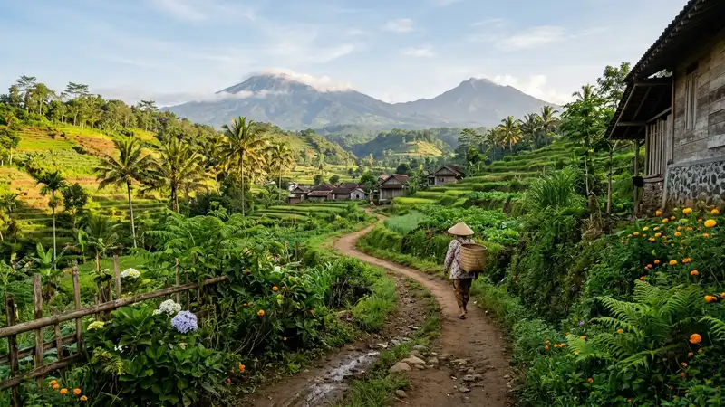

Destinasi wisata sepi di Batu menjadi pilihan tepat bagi wisatawan yang ingin healing tanpa terganggu keramaian pengunjung. Suasana tenang ini banyak ditemukan di area pinggiran kota atau lereng gunung yang belum terlalu populer.
- Destinasi sepi Batu cocok untuk wisatawan yang mencari ketenangan dan suasana healing.
- Lokasi ini biasanya berada di area pinggiran kota atau kawasan yang belum banyak dipromosikan.
- Waktu kunjungan hari kerja membuat suasana lebih sepi dibanding akhir pekan.
- Fasilitas di destinasi sepi umumnya lebih sederhana dibanding destinasi wisata populer.
- Kombinasi dengan wisata alam alternatif Batu bisa memperkaya pengalaman liburan tenang.
Apa Ciri-Ciri Destinasi Wisata Sepi di Batu?
Ciri utama destinasi wisata sepi di Batu adalah jumlah pengunjung yang relatif sedikit, suasana yang tenang, dan lokasi yang belum terlalu dikenal luas oleh wisatawan umum. Karakter ini membuatnya cocok untuk healing.
Selain minim keramaian, destinasi semacam ini biasanya juga memiliki pemandangan alam yang masih asri karena belum banyak tersentuh pembangunan komersial. Suasana pedesaan dan udara sejuk pegunungan turut memperkuat kesan tenang yang dicari wisatawan.
Fasilitas di destinasi sepi umumnya lebih terbatas dibandingkan tempat wisata populer, sehingga wisatawan perlu menyesuaikan ekspektasi terkait kenyamanan dan ketersediaan layanan pendukung.
Kapan Waktu Terbaik Mengunjungi Destinasi Sepi di Batu?
Waktu terbaik mengunjungi destinasi sepi di Batu adalah pada hari kerja dan di luar musim liburan, karena volume kunjungan wisatawan pada periode tersebut cenderung jauh lebih rendah.
Pagi hari juga menjadi waktu yang ideal karena suasana masih tenang dan udara pegunungan terasa lebih segar. Menghindari akhir pekan, tanggal merah, dan musim liburan sekolah menjadi strategi umum yang digunakan wisatawan untuk memastikan suasana tetap sepi dan nyaman.
Musim kemarau juga lebih disarankan dibanding musim hujan, mengingat kondisi jalan menuju destinasi sepi terkadang belum sepenuhnya beraspal dengan baik.
Mengapa Wisatawan Mencari Destinasi Sepi untuk Healing?
Wisatawan mencari destinasi sepi untuk healing karena suasana yang tenang dianggap lebih efektif membantu melepaskan penat dibanding tempat wisata yang ramai dan bising.
Ketenangan tanpa gangguan keramaian memberi ruang bagi wisatawan untuk lebih menikmati momen, baik sekadar duduk menikmati pemandangan maupun berjalan santai menyusuri jalur alam. Pengalaman ini berbeda dengan kunjungan ke destinasi populer yang seringkali dipenuhi antrean dan suara ramai pengunjung lain.
Selain itu, destinasi sepi juga sering menjadi pilihan bagi wisatawan yang ingin mengambil foto tanpa banyak orang lain masuk ke dalam bingkai, sehingga hasilnya terasa lebih personal.
Bagaimana Cara Memastikan Kenyamanan di Destinasi Sepi?
Cara memastikan kenyamanan di destinasi sepi adalah dengan mempersiapkan kebutuhan dasar secara mandiri, seperti membawa air minum, camilan, dan uang tunai, karena fasilitas di lokasi biasanya terbatas.
Mengecek ulasan atau informasi terbaru dari pengunjung sebelumnya juga membantu memastikan kondisi akses jalan dan keamanan lokasi. Berangkat lebih pagi dan tidak terlalu larut sore juga disarankan, mengingat penerangan jalan di kawasan sepi sering kali belum memadai.
Menginformasikan rencana perjalanan kepada teman atau keluarga sebelum berangkat ke destinasi yang minim keramaian juga menjadi langkah kehati-hatian yang wajar dilakukan.
FAQ
Apakah destinasi wisata sepi di Batu aman dikunjungi sendiri?
Destinasi wisata sepi di Batu umumnya aman dikunjungi sendiri selama wisatawan mempersiapkan diri dengan baik dan tetap berhati-hati mengingat minimnya keramaian di sekitar lokasi.
Apakah destinasi sepi cocok untuk pasangan atau rombongan kecil?
Destinasi sepi di Batu sangat cocok untuk pasangan atau rombongan kecil karena suasananya yang tenang dan tidak perlu berbagi ruang dengan banyak pengunjung lain.
Apakah destinasi sepi selalu jauh dari pusat kota?
Tidak selalu, sebagian destinasi sepi di Batu justru berada tidak terlalu jauh dari pusat kota, namun belum banyak dipromosikan sehingga tetap sepi pengunjung.
Arya
Siswa Skariga yang sedang belajar di Gm Academy.